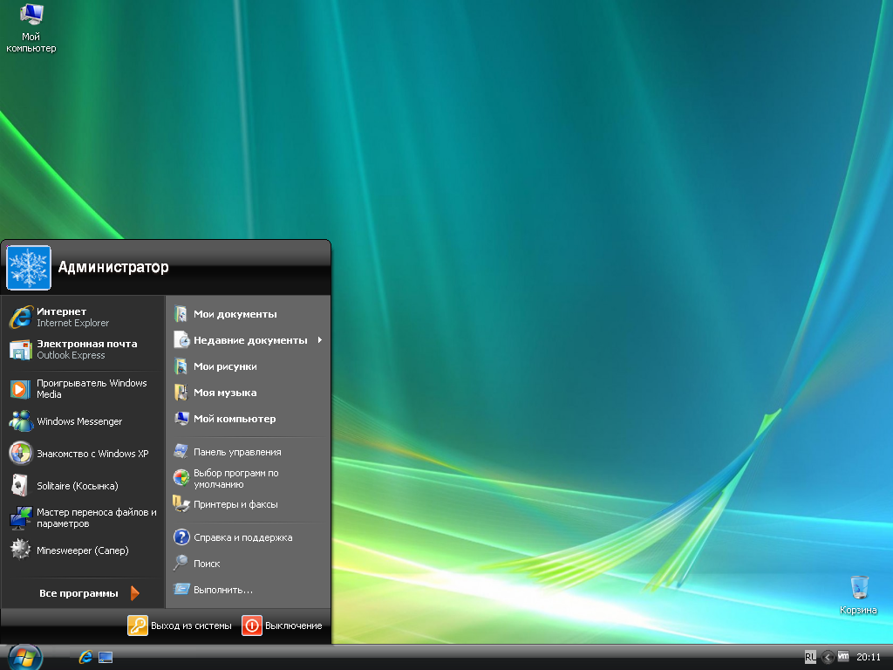
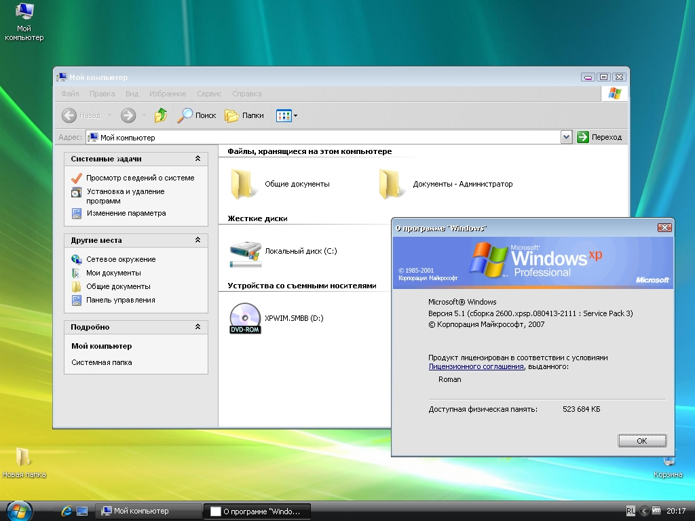

Windows XPV (Vista Edition)
Windows XPV — это не просто модификация, это попытка объединить стабильность легендарной Windows XP с эстетикой и визуальным превосходством Windows Vista. Проект нацелен на тех, кто ностальгирует по эпохе Frutiger Aero, но нуждается в быстрой и легкой системе.

Основное внимание уделено интерфейсу. Были проведены месяцы разработки, чтобы внедрить:
- Полностью обновленные иконки Vista
- Собственной темы оформления AeroBasic, соответствующей упрощенной схеме Windows Vista
- Звуковую схему, полностью соответствующую оригинальной Windows Vista.

Помимо внешнего вида, проведена глубокая оптимизация. Система включает в себя встроенные библиотеки для запуска софта, который обычно требует Windows Vista и вышe

Текущий статус: Проект находится в стадии активной разработки. Идет работа над стабильностью и интеграцией современных браузеров, работающих корректно в 2026 году. Следите за новостями в моем ТГ-канале!